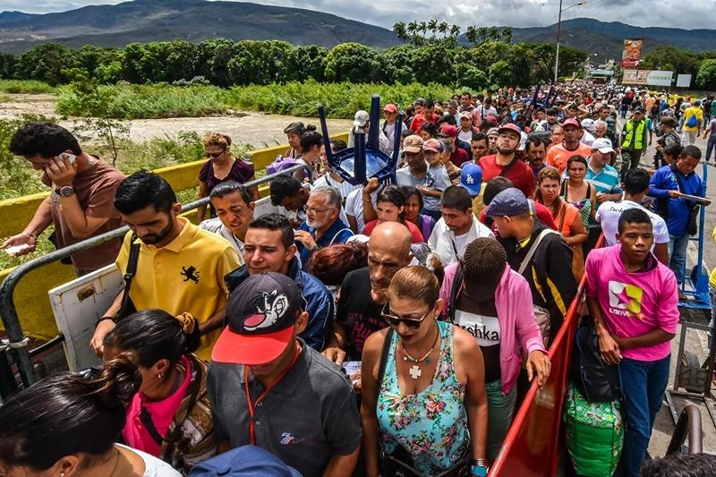

U.S. Announces Temporary Residence, Work Permits To Nearly Half A Million VenezuelansOAN’s Abril Elfi 11:40 AM – Thursday, September 21, 2023 The Biden Administration announced that it will be giving nearly half a million Venezuelans already living in the United States temporary residence and work permits. On Wednesday, the U.S. government announced that it will allow at least 472,000 Venezuelans to remain in the United States and work legally for 18 months due to growing instability and unsafe conditions in Venezuela. The Department of Homeland Security (DHS) released a statement in which they said they will be extending and redesignating the “Temporary Protected Status (TPS)” for Venezuelans who were in the United States before July 31st, 2023, granting them temporary protection from deportation as well as access to work permits. According to the statement, Homeland Security Secretary Alejandro Mayorkas made the decision “based on Venezuela’s increased instability and lack of safety.” “As a result, an additional approximately hundreds of thousands Venezuelan nationals across the country will be immediately eligible to apply for work authorization. TPS provides temporary protection from removal, as well as employment authorization for eligible Venezuelan nationals,” the department said. According to reports, under the current classification, there are around 242,700 Venezuelan TPS recipients. However, due to the redesignation, approximately 472,000 additional Venezuelans living in the United States may also petition for protection from removal. Congress established the program for foreign nationals who cannot safely return to their home country due to natural catastrophes, military conflicts, or other extreme circumstances. Governor Kathy Hochul (D-N.Y.) praised the administration’s move, citing a “productive conversation” she had with President Joe Biden on Tuesday night. “I’m grateful the federal government has acted so speedily to grant one of our top priorities: providing Temporary Protected Status to Venezuelan asylum seekers and migrants who have already arrived in this country,” the Democratic governor said in a statement. “There’s more work to do as we address this crisis, but the State of New York is prepared to immediately begin the process of signing people up for work authorization and getting them into jobs so they can become self-sufficient.” Stay informed! Receive breaking news blasts directly to your inbox for free. Subscribe here. https://www.oann.com/alerts |
 |